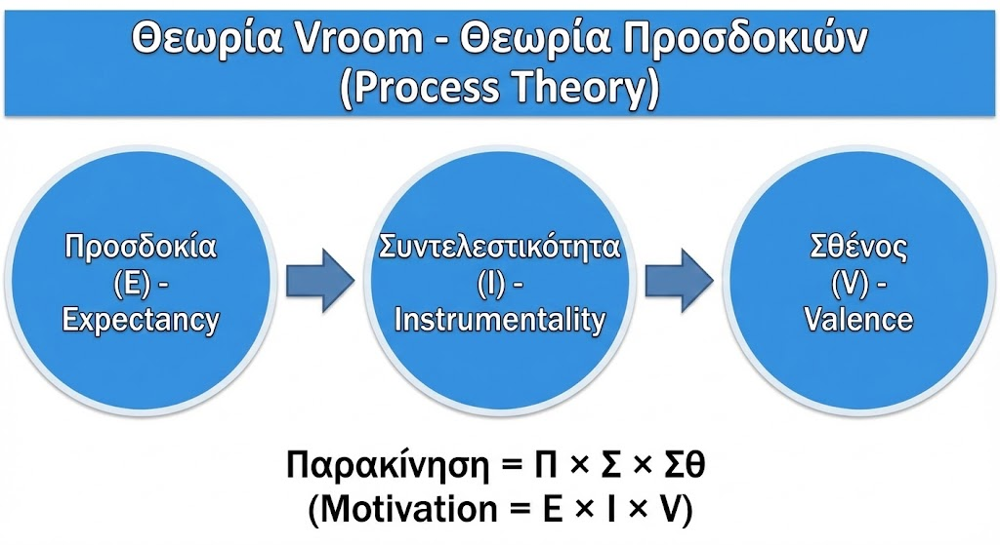

📖 Περιγραφή Θεωρίας
Η Θεωρία Προσδοκιών του Victor Vroom είναι μία από τις σημαντικότερες
θεωρίες διαδικασίας (Process Theories) στην παρακίνηση. Σε αντίθεση με
τις θεωρίες περιεχομένου που εξετάζουν τι παρακινεί τους ανθρώπους, η θεωρία
του Vroom εστιάζει στο πώς οι άνθρωποι αποφασίζουν να καταβάλουν προσπάθεια.
Η βασική ιδέα είναι ότι η παρακίνηση εξαρτάται από τις προσδοκίες του
ατόμου για το αποτέλεσμα της προσπάθειάς του και την αξία που αποδίδει
στις πιθανές ανταμοιβές.
🔑 Λέξεις-Κλειδιά
Θεωρία Προσδοκιών
Expectancy Theory
Προσδοκία (Expectancy)
Συνδρομή (Instrumentality)
Σθένος (Valence)
Process Theory
Πολλαπλασιαστική Σχέση
Victor Vroom
🔄 Η Διαδικασία της Παρακίνησης
Προσπάθεια
→
Απόδοση
→
Αποτέλεσμα
→
Ανταμοιβή
Effort → Performance → Outcome → Reward
📊 Οι 3 Βασικές Μεταβλητές
ΠΡ
1. Προσδοκία (Expectancy)
Effort → Performance
Η πεποίθηση ότι η σκληρή δουλειά θα έχει ως αποτέλεσμα το επιθυμητό
επίπεδο απόδοσης.
💭 «Αν δουλέψω σκληρά, θα τα καταφέρω;»
Σ
2. Συνδρομή (Instrumentality)
Performance → Outcome
Η πεποίθηση ότι η επιτυχημένη απόδοση θα ακολουθηθεί από ανταμοιβές.
💭 «Αν τα καταφέρω, θα ανταμειφθώ;»
ΣΘ
3. Σθένος (Valence)
Outcome Value
Η αξία που αποδίδει ένα άτομο στις ανταμοιβές και άλλες εκβάσεις
που σχετίζονται με την εργασία.
💭 «Αξίζει η ανταμοιβή για μένα;»
📋 Συνοπτικός Πίνακας
| Μεταβλητή |
Αγγλικά |
Σύντμηση |
Ερώτηση που Απαντά |
| Προσδοκία |
Expectancy |
E / ΠΡ |
Μπορώ να το κάνω; |
| Συνδρομή |
Instrumentality |
I / Σ |
Θα λάβω ανταμοιβή; |
| Σθένος |
Valence |
V / ΣΘ |
Αξίζει η ανταμοιβή; |
🏫 Εφαρμογή στην Εκπαίδευση
📌 Παράδειγμα: Εκπαιδευτικός και Καινοτόμο Πρόγραμμα
Ένας Διευθυντής θέλει να παρακινήσει εκπαιδευτικό να αναλάβει ένα Erasmus+ project:
- Προσδοκία (ΠΡ): «Αν αφιερώσω χρόνο, θα καταφέρω να υλοποιήσω το πρόγραμμα;» → Ο Διευθυντής παρέχει εκπαίδευση και υποστήριξη.
- Συνδρομή (Σ): «Αν πετύχω, θα αναγνωριστεί η προσπάθειά μου;» → Ο Διευθυντής διασφαλίζει ότι η επιτυχία θα ανταμειφθεί.
- Σθένος (ΣΘ): «Αξίζει η ανταμοιβή για μένα;» → Ο Διευθυντής μαθαίνει τι κινητοποιεί τον εκπαιδευτικό (αναγνώριση, εξέλιξη, ταξίδια).
📌 Παράδειγμα: Χαμηλή Παρακίνηση Εκπαιδευτικού
Αν ένας εκπαιδευτικός δεν παρακινείται, ο Διευθυντής πρέπει να εξετάσει:
- Είναι χαμηλή η Προσδοκία; → Χρειάζεται εκπαίδευση, υποστήριξη, πόρους
- Είναι χαμηλή η Συνδρομή; → Χρειάζεται σύνδεση απόδοσης-ανταμοιβής
- Είναι χαμηλό το Σθένος; → Χρειάζεται εξατομίκευση ανταμοιβών
👔 Οδηγίες για Διευθυντές (Managers)
✅ Για να αυξήσουν την ΠΡΟΣΔΟΚΙΑ:
- Να επιλέγουν άτομα με τις κατάλληλες ικανότητες
- Να παρέχουν εκπαίδευση και υποστήριξη
- Να θέτουν σαφείς και εφικτούς στόχους
- Να εξασφαλίζουν τους απαραίτητους πόρους
✅ Για να αυξήσουν τη ΣΥΝΔΡΟΜΗ:
- Να διευκρινίζουν τα «ψυχολογικά συμβόλαια»
- Να γνωστοποιούν τις πιθανότητες των αποτελεσμάτων
- Να κατανέμουν ανταμοιβές με βάση την απόδοση
- Να είναι συνεπείς στις υποσχέσεις τους
✅ Για να αυξήσουν το ΣΘΕΝΟΣ:
- Να ταυτοποιούν τις ατομικές ανάγκες
- Να προσαρμόζουν τις ανταμοιβές στις ατομικές ανάγκες
- Να προσφέρουν ποικιλία ανταμοιβών
- Να ρωτούν τι εκτιμούν οι εργαζόμενοι
🔗 Διάκριση: Θεωρίες Περιεχομένου vs Διαδικασίας
| Θεωρίες Περιεχομένου |
Θεωρίες Διαδικασίας |
| Maslow, Herzberg, ERG, McClelland |
Vroom, Adams, Locke |
| Εστιάζουν στο ΤΙ παρακινεί |
Εστιάζουν στο ΠΩΣ λειτουργεί η παρακίνηση |
| Ανάγκες, επιθυμίες |
Γνωστικές διαδικασίες, αποφάσεις |
⚠️ Σημαντικά για τις Εξετάσεις
- Ο τύπος είναι Π = ΠΡ × Σ × ΣΘ (πολλαπλασιαστικός!)
- Αν οποιοσδήποτε παράγοντας = 0, τότε Π = 0
- Η θεωρία Vroom είναι θεωρία διαδικασίας (Process Theory)
- Σωστό ζευγάρι: Skinner – θεωρία ενίσχυσης (ΟΧΙ Vroom – θεωρία εξίσωσης)
- Συχνή ερώτηση: «Η θεωρία προσδοκιών υποστηρίζει: Π = Προσδοκία × ... × ...»
- Απάντηση: Σπουδαιότητα (Instrumentality), Σθένος (Valence)